가전 구독은 구독 대상으로 운영되는 제품만 신청할 수 있으며, 제품에 따라 구독 가능한 모델·색상·용량과 제공되는 요금제가 다를 수 있어요.
LG전자 가전 구독은 가전을 사지 않고 매월 구독료를 내며 쓰는 방식입니다.
케어 매니저의 정기 방문 관리와 정품 소모품 교체, 무상 수리 서비스가 구독료에 함께 들어 있습니다.
약정이 끝나면 제품은 고객님의 소유가 됩니다.
구독은 제품 이용과 케어서비스를 함께 받을 수 있고,
구매는 제품을 소유한 뒤 직접 관리하는 방식이에요.
| 비교 항목 | 구독 | 구매 |
|---|---|---|
| 초기 비용 | 0원 | 높은 일시불/할부 비용 |
| 월 고정 비용 | 월 구독료 | 소모품, A/S 비용 발생 |
| 케어 및 성능 점검 | 구독료 내 포함 | 없음 |
| 소모품 교체 | 구독료 내 포함 | 없음 |
| 무상 철거/재설치 | 계약기간 내 1회 제공 | 없음 |
| 무상 A/S | 3~6년까지 계약기간 전체 보장 | 제품별 보증기간에 따름 |
| 해지 비용 | 계약기간 이내 해지 시 기간별 해약금 발생 |
없음 |
| 소유권 이전 | 계약기간 이후 | 구매 직후 |
| 이런 분께 추천해요 | 초기 비용 없이 전문가 관리도 받고 싶은 분 | 약정 없이 온전히 소유하고 싶은 분 |
총 구독요금은 월 구독료×약정개월 수 기준이며, 등록비·설치비·부가서비스 및 할인 적용 여부에 따라 달라질 수 있습니다.
가전 구독 시 전문가 방문 케어, 소모품 교체, 무상 A/S 서비스가 월 구독료에 포함돼요.
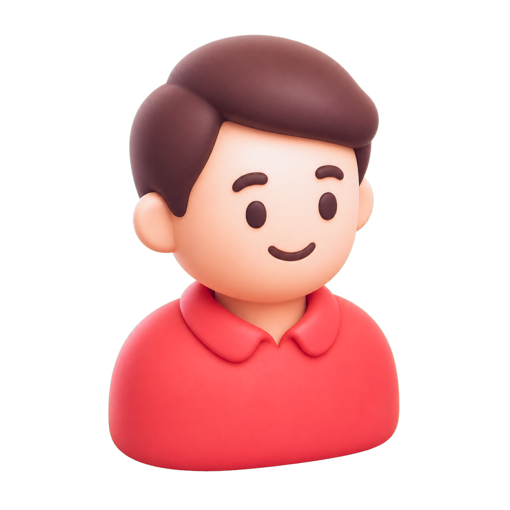
정해진 주기에 케어 매니저가 방문해 분해·세척하고 성능을 점검합니다.
세부 서비스와 방문 주기는 선택한 제품 및 요금제에 따라 다릅니다.
필터·먼지봉투 등 정품 소모품을 주기에 맞춰 교체하거나 배송합니다.
무상 A/S 기간과 적용 범위는 제품 및 계약 조건에 따라 다르며, 고객 과실로 인한 파손이나 일부 소모품은 제외될 수 있습니다.
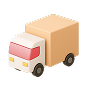
약정 기간 중 최대 6년 무상 수리, 이사 시 철거·재설치를 1회 무료로 제공합니다.
철거/재설치 대상 제품: STEM 냉장고, 14인용 식기세척기, 전기레인지, 워시타워, 에어컨, 177cm이상 TV
무상 철거/재설치시 제품이동 서비스는 포함되어 있지 않습니다.
상업용 에어컨은 무상 철거/재설치 서비스 대상에서 제외됩니다.
제품에 따라 제공되는 케어 항목과 주기가 달라요. 구독하려는 제품을 선택해 확인해 보세요.
세척 직수/고압 세척 세척 물이나 세정액을 사용해 제품에 쌓인 오염물을 말끔히 제거해요.
클리닝 스팀 케어 클리닝 전문 세정액을 사용해 오염물을 씻어내거나, 전용 도구로 먼지와 이물질을 털어내 제품을 쾌적하게 유지해요.
케어 UV 케어, 드럼 케어, 내시경 전/후 검사 케어 UV 살균 등 제품에 꼭 맞는 방식으로 위생적인 사용 환경을 만들어드려요.
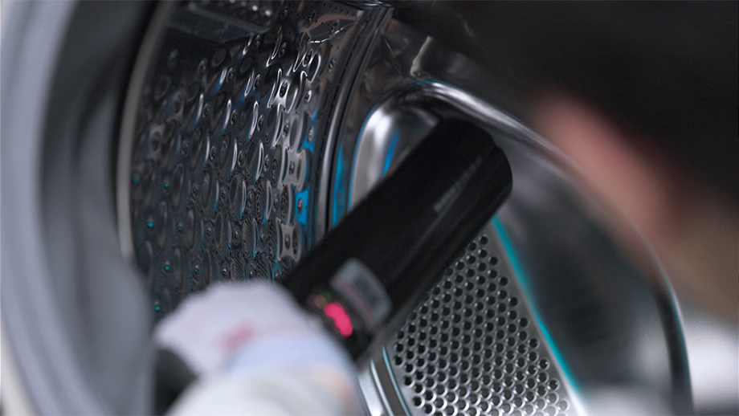
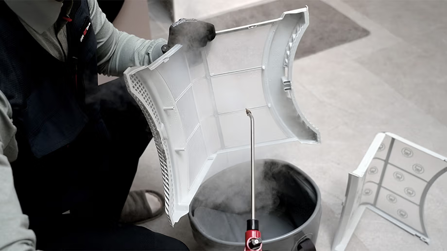
제품 작동 상태와 주요 기능 점검
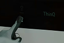
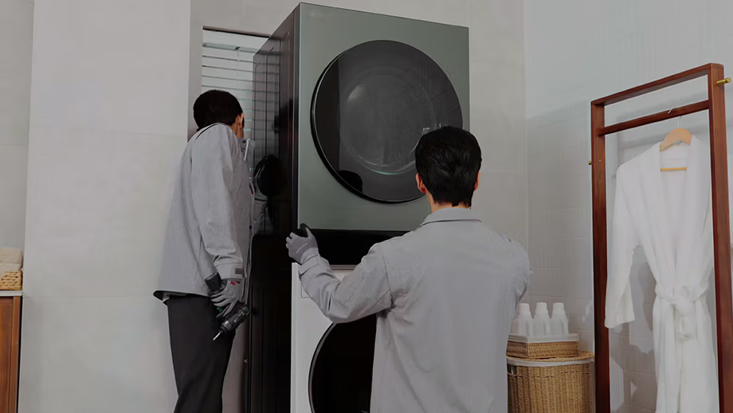
라이트플러스 요금제 기준이며, 제품과 요금제 조합에 따라 제공 항목과 주기가 달라집니다.
주요 부품을 분리해 내부 오염 세척
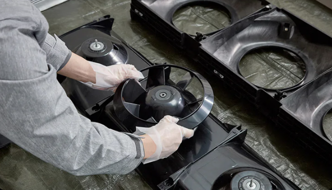
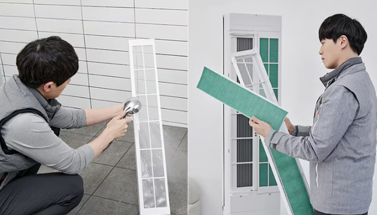
세척 고압 세척 세척 물이나 세정액을 사용해 제품에 쌓인 오염물을 말끔히 제거해요.
클리닝 부품 클리닝 클리닝 전문 세정액을 사용해 오염물을 씻어내거나, 전용 도구로 먼지와 이물질을 털어내 제품을 쾌적하게 유지해요.
케어 스팀 케어, UV 케어, 피톤치드 케어 케어 UV 살균 등 제품에 꼭 맞는 방식으로 위생적인 사용 환경을 만들어드려요.
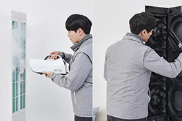
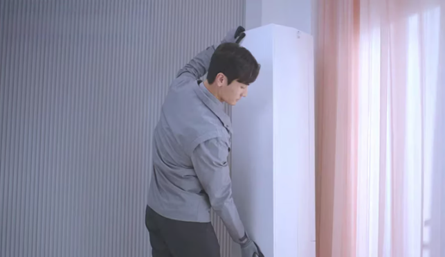
프리미엄 · 라이트플러스 요금제 기준이며, 제품과 요금제 조합에 따라 제공 항목과 주기가 달라집니다.
주요 부품을 분리해 내부 오염 세척
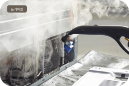
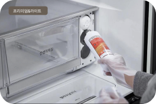
클리닝 부품 클리닝 클리닝 전문 세정액을 사용해 오염물을 씻어내거나, 전용 도구로 먼지와 이물질을 털어내 제품을 쾌적하게 유지해요.
케어 유로 고온살균 케어 UV 살균 등 제품에 꼭 맞는 방식으로 위생적인 사용 환경을 만들어드려요.
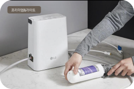
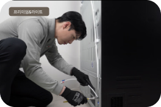
프리미엄 · 라이트 요금제 기준이며, 제품과 요금제 조합에 따라 제공 항목과 주기가 달라집니다.
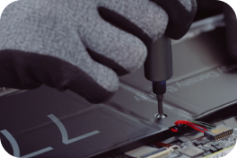
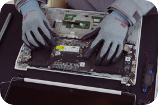
프리미엄 · 라이트플러스 요금제 기준이며, 제품과 요금제 조합에 따라 제공 항목과 주기가 달라집니다.
베이직 요금제 기준이며, 제품과 요금제 조합에 따라 제공 항목과 주기가 달라집니다.
신청 전에 계약 조건과 요금·혜택은 물론, 이용 중과 해지·만료 시점의 조건까지 미리 확인해 보세요.
가전 구독은 구독 대상으로 운영되는 제품만 신청할 수 있으며, 제품에 따라 구독 가능한 모델·색상·용량과 제공되는 요금제가 다를 수 있어요.
가전 구독은 구독 대상으로 운영되는 제품만 신청할 수 있으며, 제품에 따라 구독 가능한 모델·색상·용량과 제공되는 요금제가 다를 수 있어요.
가전 구독은 구독 대상으로 운영되는 제품만 신청할 수 있으며, 제품에 따라 구독 가능한 모델·색상·용량과 제공되는 요금제가 다를 수 있어요.
중도 해지는 가능하지만, 계약 상태에 따라 위약금이나 회수비 등 비용이 발생할 수 있습니다.
계약 조건에 따라 다음 비용이 해약금으로 발생할 수 있어요.
의무사용기간 내에 해지하면 남은 의무사용기간의 총 요금을 기준으로 위약금이 산정돼요. 이때 월 요금은 할인 적용 전 기본요금을 기준으로 합니다.
※ 계약기간이 2년인 상품은 1년 경과 이전 20%, 1년 경과 후 의무사용기간 이전 10%가 적용돼요.
의무사용기간 경과 여부와 관계없이 중도 해지로 제품을 반납하면 철거와 회수에 필요한 비용이 발생할 수 있어요. 회수비는 제품 종류와 수량에 따라 달라집니다.
제품을 회수할 수 없거나 본체·세트 구성품을 반납하지 못하면 회수비 대신 분실료가 부과될 수 있습니다.
※ 계약기간이 2년인 상품은 1년 경과 이전 20%, 1년 경과 후 의무사용기간 이전 10%가 적용돼요.
| 제품 | 회수비 |
|---|---|
| 정수기/홈브루 | 50,000원 |
| 공기청정기/가습기/제습기 | 39,000원 |
| 건조기/식물재배기 | 62,000원 |
| 스타일러 | 70,000원 |
| myCup | 60,000원 |
| TV(49″ 이하) | 85,000원 |
| TV(50″ 이상 59″ 이하) | 90,000원 |
| TV(60″ 이상 69″ 이하) | 100,000원 |
| TV(70″ 이상 79″ 이하) | 130,000원 |
| TV(80″ 이상 89″ 이하) | 180,000원 |
| TV(90″ 이상 99″ 이하) | 1,100,000원 |
| TV(100″ 이상) | 1,400,000원 |
| STEM/상냉장/양문형냉장고 | 98,500원 |
| 일반냉장고 | 56,000원 |
| 김치냉장고 | 54,000원 |
| 식기세척기/안마의자 | 73,000원 |
| 바스에어시스템 | 70,000원 |
| 광파오븐 | 44,000원 |
| 노트북 | 32,000원 |
| 모니터 | 65,000원 |
| 세탁기(드럼/워시콤보) | 63,000원 |
| 세탁기(통돌이/미니워시) | 50,000원 |
| 워시타워 | 111,000원 |
| 슈케어 | 40,000원 |
| 전기레인지 | 41,000원 |
| 환기 | 149,000원 |
| 사이니지(75″ 이하) | 55,000원 |
| 사이니지(86″) | 106,000원 |
| 프로젝터 | 63,000원 |
| 에어컨 벽걸이 | 106,000원 |
| 프로젝터 | 63,000원 |
| 에어컨 벽걸이 | 65,000원 |
| 에어컨(스탠드, 2in1) | 125,000원 |
| 상업용 스탠드 에어컨 | 198,000원 |
| 주거용 SAC 3실 | 598,000원 |
| 주거용 SAC 4실 | 798,000원 |
| 주거용 SAC 5실 | 997,500원 |
구독 계약 성립 후 12개월 이내 고객 요청에 의한 해지 시, 기 지급받은 사은품에 해당하는 금액(전액)이 부과돼요. 다품목 구매 혜택이나 금액대별 멤버십 포인트 혜택을 받은 후 일부 제품을 해지하면, 해당 제품으로 인해 지급된 혜택 상당액이 부과될 수 있습니다.
해지 효력이 발생하는 시점까지 납부하지 않은 월 구독료나 연체비용이 있으면 해지비용에 함께 청구돼요.
해약 시점까지 남은 가전 구독 월 요금을 일할 계산해요.
장기 미납 고객에 한정되어 적용됩니다.
미리 납부한 선납금이 있다면, 선납으로 할인받은 금액 중 실제 사용일수에 해당하는 금액을 제외하고 반환돼요.
고객센터(1544-7777) 또는 홈페이지 [마이페이지] > [구독 관리] > [계약 관리]를 통해 해지상담 가능합니다.
발생 비용을 안내받고 동의하면 해지 절차가 진행돼요.
제품과 요금, 혜택을 편하게 물어보세요.
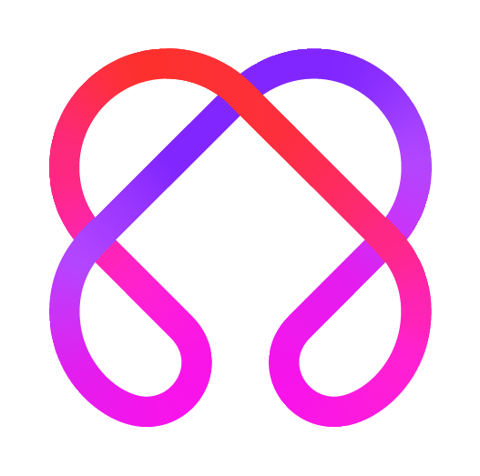
AI Chat에게 물어보기